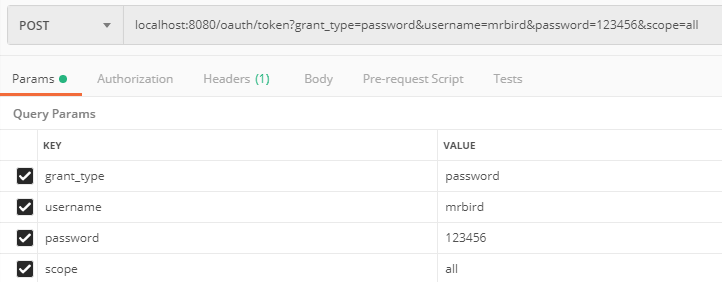
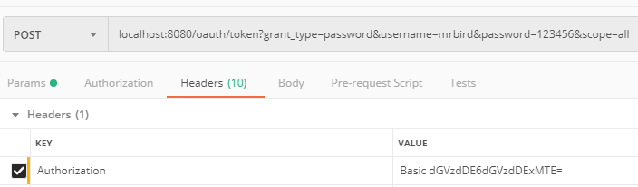
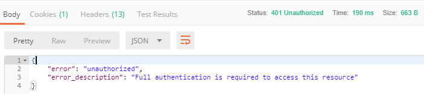
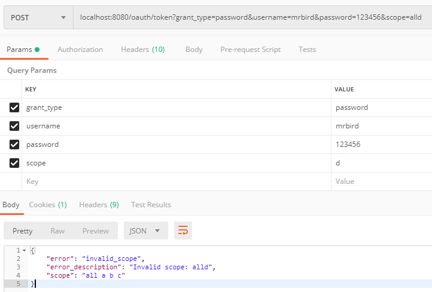
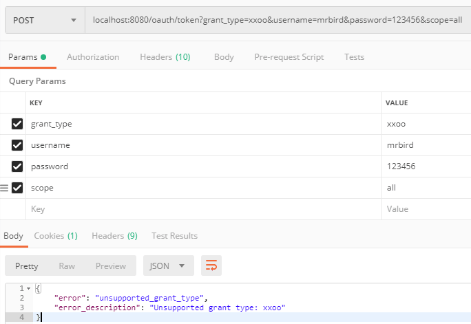
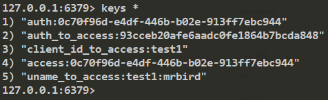
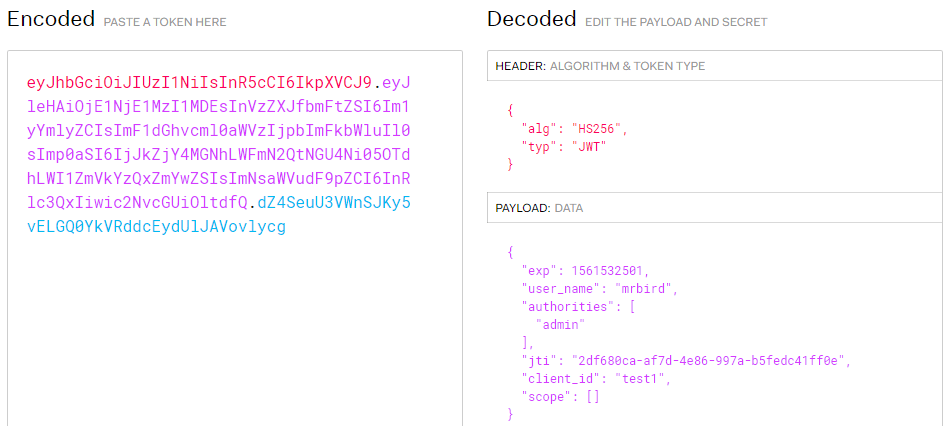
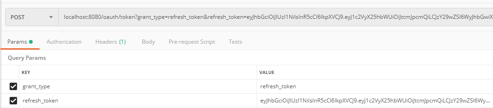
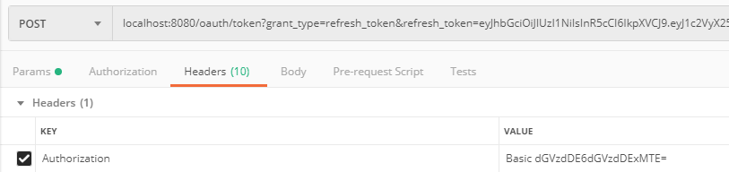

在前面几节中，我们获取到的令牌都是基于Spring Security OAuth2默认配置生成的，Spring Security允许我们自定义令牌配置，比如不同的client_id对应不同的令牌，令牌的有效时间，令牌的存储策略等；我们也可以使用JWT来替换默认的令牌。
自定义令牌配置
我们让认证服务器AuthorizationServerConfig继承AuthorizationServerConfigurerAdapter，并重写它的configure(ClientDetailsServiceConfigurer clients)方法：
1 |
|
认证服务器在继承了AuthorizationServerConfigurerAdapter适配器后，需要重写configure(AuthorizationServerEndpointsConfigurer endpoints)方法，指定 AuthenticationManager和UserDetailService。
创建一个新的配置类SecurityConfig，在里面注册我们需要的AuthenticationManagerBean：
1 |
|
此外，重写configure(ClientDetailsServiceConfigurer clients)方法主要配置了：
定义两个client_id，及客户端可以通过不同的client_id来获取不同的令牌；
client_id为test1的令牌有效时间为3600秒，client_id为test2的令牌有效时间为7200秒；
client_id为test1的refresh_token（下面会介绍到）有效时间为864000秒，即10天，也就是说在这10天内都可以通过refresh_token来换取新的令牌；
在获取client_id为test1的令牌的时候，scope只能指定为all，a，b或c中的某个值，否则将获取失败；
只能通过密码模式(password)来获取client_id为test1的令牌，而test2则无限制。
启动项目，演示几个效果。启动项目后使用密码模式获取test1的令牌：

和前面介绍的那样，头部需要传入test1:test1111经过base64加密后的值： 
点击发送后，意外的返回了错误！

控制台输出了 Encoded password does not look like BCrypt 的告警。
查阅资料后发现，在新版本的spring-cloud-starter-oauth2指定client_secret的时候需要进行加密处理：
1 |
|
在前面自定义登录认证获取令牌一节中，我们在MyAuthenticationSucessHandler判断了client_secret的值是否正确。由于我们这里client_secret加密了，所以判断逻辑需要调整为下面这样:
1 | ... |
言归正传，修改后重启项目，重新使用密码模式获取令牌：
1 | { |
可以看到expires_in的时间是我们定义的3600秒。
将scope指定为d看看会有什么结果:

由于我们定义了只能通过密码模式来获取client_id为test1的令牌，所以我们看看将grant_type改为xxoo会有什么结果:

默认令牌是存储在内存中的，我们可以将它保存到第三方存储中，比如Redis。
创建TokenStoreConfig：
1 |
|
然后在认证服务器里指定该令牌存储策略。重写configure(AuthorizationServerEndpointsConfigurer endpoints)方法：
1 |
|
重启项目获取令牌后，查看Redis中是否存储了令牌相关信息：

可以看到，令牌信息已经存储到Redis里了。
使用JWT替换默认令牌
使用JWT替换默认的令牌（默认令牌使用UUID生成）只需要指定TokenStore为JwtTokenStore即可。
创建一个JWTokenConfig配置类：
1 |
|
签名密钥为test_key。在配置类里配置好JwtTokenStore后，我们在认证服务器里指定它：
1 |
|
重启服务获取令牌，系统将返回如下格式令牌：
1 | { |
将access_token中的内容复制到https://jwt.io/网站解析下：

使用这个token访问/index可以成功获取到信息，这里就不演示了。
拓展JWT
上面的Token解析得到的PAYLOAD内容为：
1 | { |
如果想在JWT中添加一些额外的信息，我们需要实现TokenEnhancer（Token增强器）：
1 | public class JWTokenEnhancer implements TokenEnhancer { |
我们在Token中添加了message: hello world信息。然后在JWTokenConfig里注册该Bean：
1 |
|
最后在认证服务器里配置该增强器：
1 |
|
重启项目，再次获取令牌，系统返回：
1 | { |
可以看到，在返回的JSON内容里已经多了我们添加的message信息，此外将access_token复制到jwt.io网站解析，内容如下：
1 | { |
解析后的JWT也包含了我们添加的message信息。
Java中解析JWT
要在Java代码中解析JWT，需要添加如下依赖：
1 | <dependency> |
修改/index：
1 | ("index") |
signkey需要和JwtAccessTokenConverter中指定的签名密钥一致。重启项目，获取令牌后访问/index，输出内容如下：
1 | { |
刷新令牌
令牌过期后我们可以使用refresh_token来从系统中换取一个新的可用令牌。但是从前面的例子可以看到，在认证成功后返回的JSON信息里并没有包含refresh_token，要让系统返回refresh_token，需要在认证服务器自定义配置里添加如下配置：
1 |
|
授权方式需要加上refresh_token，除了四种标准的OAuth2获取令牌方式外，Spring Security OAuth2内部把refresh_token当作一种拓展的获取令牌方式。
通过上面的配置，使用test1这个client_id获取令牌时将返回refresh_token，refresh_token的有效期为10天，即10天之内都可以用它换取新的可用令牌。
重启项目，认证成功后，系统返回如：
1 | { |
假设现在access_token过期了，我们用refresh_token去换取新的令牌。使用postman发送如下请求：


1 | { |
postman请求及源码链接：https://github.com/wuyouzhuguli/SpringAll/tree/master/65.Spring-Security-OAuth2-Config